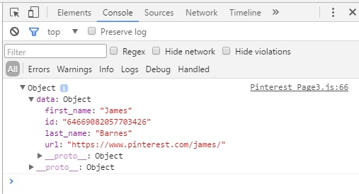
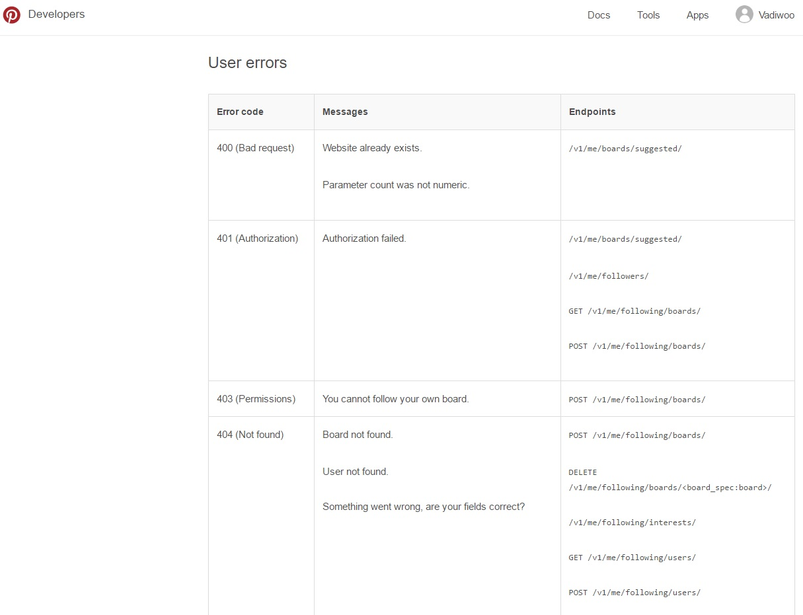

The response from our request is sent back to us in the JavaScript Object Notation (JSON) format. JSON (JavaScript Object Notation) is a minimal, readable format for structuring data. It is used primarily to transmit data between a server and web application, as an alternative to XML. We’ll focus on working with the response.

POSSIBLE ERRORS
Errors that we might get while working with Pinterest API are divided into general errors, OAuth Errors, User errors, Board erros and Pin errors.
Here is the documentaion can be found on Pinterest API about users errors:-

Here is an example of an error for 'User not Found' when requesting user's data.